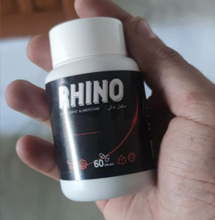
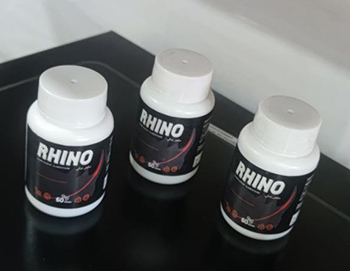

Cet article a été publié:
RHINO - La solution puissante contre le prostatite
Découvrez RHINO - La solution pour votre bien-être masculin. Si vous souffrez des symptômes du prostatite, RHINO est là pour vous aider. Notre approche avancée vous offre une solution naturelle. Reprenez le contrôle de votre vie avec RHINO et vivez en toute sérénité.
Butov Denis Andreïevitch
Médecin généraliste dévoué à la santé de mes patients. J'établis des relations de confiance en écoutant attentivement leurs besoins et en offrant des solutions adaptées.
La gravité de la vérification de la prostate - Comprenez-vous les risques associés ?
La vérification régulière de la prostate est essentielle pour détecter d'éventuels problèmes de santé. Les risques liés à l'omission de cette vérification peuvent être graves. Il est important de prendre conscience des conséquences potentielles sur votre bien-être. Informez-vous sur l'importance de la vérification de la prostate et prenez des mesures appropriées pour protéger votre santé.
Comment prévenir les problèmes de prostate ? - Quelles actions adopter ?
Il existe des mesures préventives efficaces pour réduire les risques de problèmes de prostate. Des habitudes de vie saines telles qu'une alimentation équilibrée, l'exercice physique régulier et l'hydratation adéquate peuvent jouer un rôle crucial. Découvrez les actions concrètes que vous pouvez entreprendre pour maintenir la santé de votre prostate et prévenir les problèmes potentiels.
Symptômes de la prostate : Que faire en cas d'inconfort ? - Les démarches à suivre
Lorsque vous éprouvez des symptômes de problèmes de prostate tels que des douleurs, des difficultés urinaires ou une diminution du débit urinaire, il est important d'agir rapidement. Consultez un professionnel de la santé qui pourra évaluer votre situation et vous recommander les démarches appropriées. Ne laissez pas les symptômes non soingés affecter votre qualité de vie.
Pourquoi ne pas choisir les mauvaises méthodes pour soigner la prostate ? - Quelles sont les alternatives ?
Lorsqu'il s'agit de soigner les problèmes de prostate, il est crucial de faire des choix éclairés. Pourquoi devriez-vous éviter les mauvaises méthodes de soignement ? Voici quelques raisons clés :
- Risques pour la santé : Les mauvaises méthodes de soigmnement peuvent entraîner des effets secondaires indésirables et même aggraver la condition de la prostate. Opter pour des approches non éprouvées ou dangereuses peut compromettre votre santé globale
- Efficacité limitée : Les mauvaises méthodes peuvent ne pas offrir les résultats souhaités. Il est important de choisir des soignements basés sur des preuves scientifiques solides et des recommandations cliniques pour maximiser les chances de succès.
- Perte de temps et d'argent : Investir dans des méthodes inefficaces peut entraîner une perte de temps précieux et des dépenses financières inutiles. Il est préférable de choisir des options de soignement éprouvées qui offrent une meilleure perspective de guérison.
Les bonnes alternatives incluent des approches cliniques reconnues telles que les soignements recommandés par des professionnels de la santé, les thérapies physiques appropriées et les changements de style de vie bénéfiques. Il est essentiel de consulter un spécialiste de la prostate pour obtenir un diagnostic précis et des conseils personnalisés sur les options de soignement les plus appropriées.
Quels aliments éviter et quels aliments consommer pour préserver la santé de votre prostate ?
La santé de la prostate est étroitement liée à notre alimentation. Pour maintenir votre prostate en bonne santé, voici quelques conseils sur les aliments à éviter et les aliments à privilégier :
Évitez les aliments transformés : Les aliments transformés riches en gras saturés, en sel et en additifs peuvent avoir un impact négatif sur la santé de votre prostate. Évitez les aliments frits, les plats préparés, les charcuteries et les snacks industriels.
Limitez la consommation de viande rouge : La consommation excessive de viande rouge peut être liée à un risque accru de problèmes de prostate. Optez plutôt pour des sources de protéines maigres comme les poissons gras (saumon, sardines) et les légumineuses.
Le Prune Africain : Un Remède Impressionnant pour la Santé de la Prostate
La santé de la prostate est une préoccupation majeure pour de nombreux hommes, et la recherche de solutions naturelles et efficaces est primordiale. Parmi les remèdes prometteurs, le Prune Africain se démarque par son potentiel impressionnant pour soutenir la santé de la prostate.
Le Prune Africain, également connu sous le nom de Pygeum Africanum, est un arbre originaire d'Afrique. Ses extraits ont été largement étudiés et ont démontré des propriétés bénéfiques pour la prostate. Cette plante contient des composés actifs tels que les phytostérols, les acides gras et les antioxydants qui jouent un rôle crucial dans la santé de la prostate.
L'une des principales raisons pour lesquelles le Prune Africain est important pour la prostate est son effet anti-inflammatoire. L'inflammation de la prostate, connue sous le nom de prostatite, est une affection courante qui peut entraîner des symptômes gênants tels que des douleurs, des difficultés urinaires et des problèmes de fonction sexuelle. Les propriétés anti-inflammatoires du Prune Africain peuvent aider à réduire l'inflammation de la prostate et soulager les symptômes associés.
Une Plante Puissante pour la Santé de la Prostate
La santé de la prostate est essentielle pour le bien-être des hommes, et l'utilisation de remèdes naturels peut jouer un rôle important dans son maintien. Parmi les plantes bénéfiques pour la prostate, l'Ortie se démarque par ses propriétés puissantes et ses nombreux bienfaits.
L'Ortie, également connue sous le nom scientifique Urtica dioica, est une plante largement répandue et appréciée depuis des siècles pour ses propriétés thérapeutiques. Elle est riche en nutriments essentiels tels que les vitamines, les minéraux et les antioxydants, qui sont tous bénéfiques pour la santé de la prostate
L'une des principales raisons pour lesquelles l'Ortie est importante pour la prostate est son effet bénéfique sur les niveaux de testostérone. La testostérone est une hormone essentielle pour la santé masculine, et des niveaux équilibrés sont nécessaires pour maintenir la fonction sexuelle, la libido et la santé de la prostate. L'Ortie peut aider à soutenir des niveaux de testostérone optimaux, ce qui peut contribuer à améliorer la fonction sexuelle et à prévenir certains problèmes de prostate.
La Meilleure Méthode pour Se Soigner
La recherche d'une méthode efficace pour se soigner et retrouver une bonne santé est une préoccupation majeure pour de nombreuses personnes. Lorsqu'il s'agit de trouver la meilleure méthode de soignement, RHINO se distingue comme une option remarquable et fiable.
Une des raisons pour lesquelles RHINO est considéré comme la meilleure méthode de soignement est son efficacité prouvée. De nombreux utilisateurs ont témoigné des résultats positifs qu'ils ont obtenus après avoir utilisé RHINO. Que ce soit pour soigner la dysfonction érectile, améliorer la performance sexuelle ou soulager les symptômes de la prostate, RHINO offre des résultats tangibles et durables
En conclusion, RHINO est la meilleure méthode de soignement pour se soigner et retrouver une bonne santé. Son efficacité prouvée, sa sécurité, sa facilité d'utilisation et son approche globale en font un choix incontournable. Si vous recherchez une méthode de soignement fiable et efficace, RHINO est la solution idéale pour vous aider à guérir et à vivre une vie saine et épanouissante.
P.S. Après l'interview, nous avons contacté le fournisseur du produit RHINO et avons convenu d'une réduction de 50% pour nos lecteurs uniquement à partir de la date de cet article jusqu'au inclus. Il vous suffit de laisser vos contacts dans le formulaire ci-dessous.
Le remède est un véritable miracle ! Les problèmes dont j'ai souffert pendant presque 2 ans ne me dérangent plus ! Maintenant je me sens bien et je vais aux toilettes comme quand j'étais jeune. Le prix est agréablement rassurant.
Mon grand-père avait l'habitude de résoudre ses problèmes de prostate et de douleurs de la prostate en mangeant des fruits de prune africains, et les résultats ont toujours été positifs.
Reconnu ! RHINO est génial ! Je l'ai acheté il y a quelques mois et je n'ai pas eu de problème depuis. Je ne me souviens même pas du mot prostatite. Merci aux développeurs de ce produit!


Je l'ai testé sur moi-même. Au début, j'ai pris un tas d'antibiotiques, je me suis fait masser, j'ai combattu le problème avec acharnement. Mais après quelques mois de visites à l'hôpital, le problème a recommencé. Mais après avoir pris RHINO, que j'ai commandé en solde, je me sens beaucoup mieux.
En fait, je n'ai jamais pensé qu'un jour on me diagnostiquerait cette terrible maladie. Pour un jeune homme, c'est une croix d'avoir à la fois confiance en soi et une vie sexuelle. Je ne me suis pas découragé, j'ai cherché une solution sur tous les fronts. Je n'ai pas lésiné sur les moyens pour me rétablir. Je me suis fait masser pendant longtemps, et finalement, seul RHINO m'a aidé!
Merci beaucoup pour cette interview. C'était très intéressant à lire. J'ai une grande confiance en ce médecin. Je souffre d'une prostatite depuis plusieurs années. J'espère que RHINO, que je viens de commander, m'aidera. D'ailleurs, il ne coûte que
C'est difficile à croire... Mais tant de gens disent que ça marche.
J'ai pensé à me faire opérer, mais c'est annulé. J'ai 48 ans et j'ai l'impression d'en avoir 38, je ne m'y attendais même pas.)
Merci pour cet article ! Je l'ai commandé pour mon mari et nous l'utilisons maintenant.
Je recommande ce produit. Je l'ai utilisé pendant un mois, très bien dans l'ensemble. Je n'ai pas trouvé d'effets secondaires, contrairement à la plupart des antibiotiques. La douleur s'est atténuée, je vais moins souvent aux toilettes.
Merci pour le conseil. Je viens de commander le
Je suis entièrement d'accord avec ce qui a été dit ici, RHINO est un excellent produit. Avant, j'avais des problèmes de miction - des envies fréquentes, et le flux était très faible. Je devais me lever 10 fois par nuit. Tout s'est normalisé après environ une semaine de prise de RHINO. Je n'ai pas eu besoin de consulter de médecin. J'ai commandé le complement alimentaire sur le site web susmentionné à un prix réduit.
